O norte visual do Streampolis. À esquerda o alvo; à direita o que o jogo
desenha hoje. Serve para decidir o que construir — e para reconhecer quando
chegamos lá.
Agosto de 2026 · referência, não captura do jogo
00A frase que resume
Legibilidade de personagem de simulador de vida + limpeza estilizada de
jogo competitivo moderno + linguagem de interface de live.
Sem realismo. O que precisamos é charme: um avatar que a pessoa queira
vestir, uma casa que ela queira mobiliar, uma live que ela queira abrir.
Cada uma dessas vontades é uma linha de receita.
00aAvatarV2 — o experimento Quaternius
Depois de três sprints consertando o avatar procedural, a pergunta virou:
vale continuar? O experimento responde com uma imagem. Corpo base do
Quaternius Universal Base Characters (CC0), importado em glTF com o
rig original preservado, renderizado no mesmo laboratório, com a mesma luz
e os materiais do Streampolis. Nada foi substituído — roupa, loja,
banco e multiplayer não foram tocados, e o avatar do jogo continua sendo o
procedural. Ao vivo em ?view=lab&v2=1.
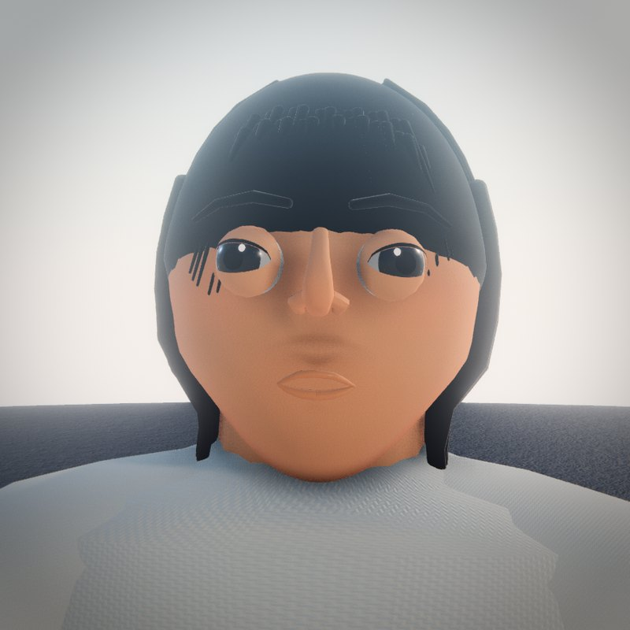
Procedural, hoje
Três sprints de conserto: ombro costurado, crânio reproporcionado,
cabelo em mechas, pele com zonas. É o melhor que esta abordagem
entregou.
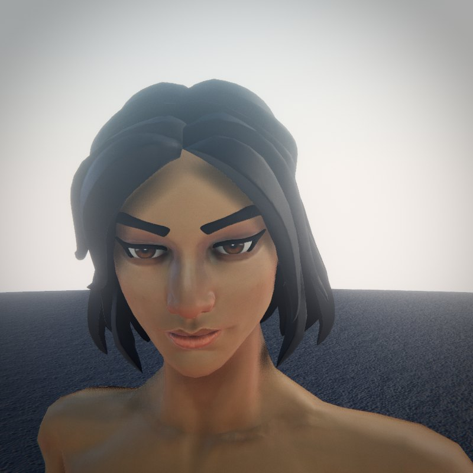
AvatarV2
Pálpebra com espessura, cílio, maçã do rosto, lábio com volume,
clavícula, cabelo com repartido e mechas de verdade. 15 mil triângulos,
1 MB.
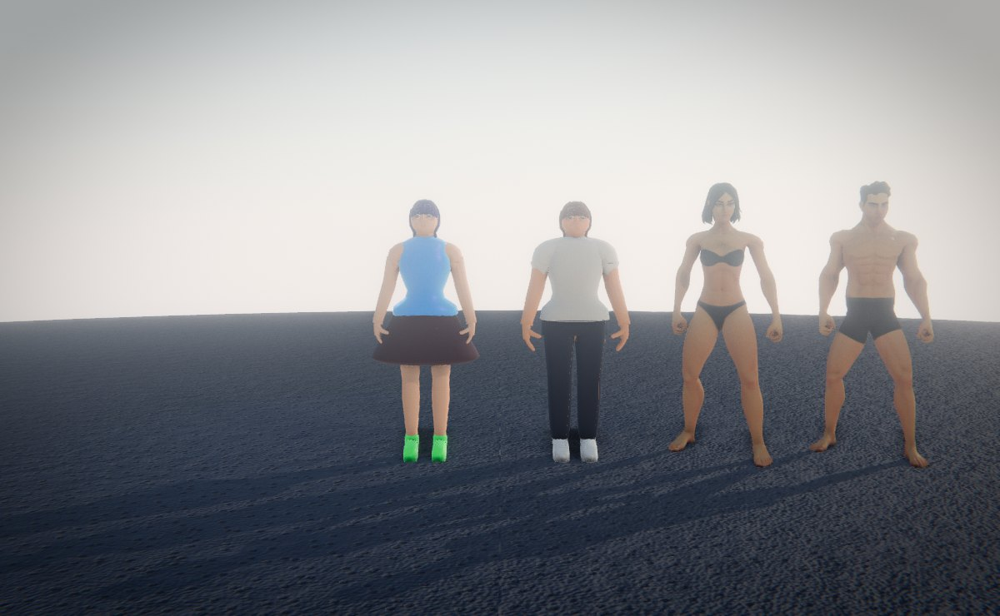
Lado a lado
Mesma cena, mesma luz, mesma câmera. À esquerda o avatar do jogo; à
direita o corpo base.
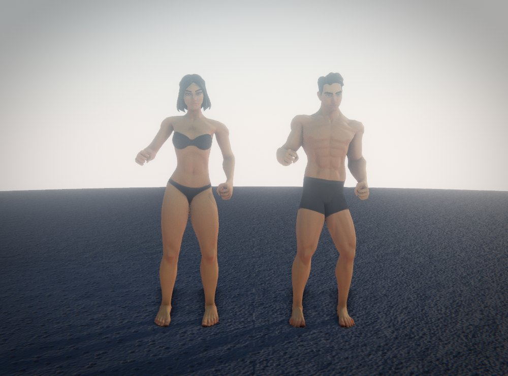
Sem retarget
A Universal Animation Library do mesmo autor usa o MESMO esqueleto de
65 ossos, com os mesmos nomes. O AnimationMixer amarra as
faixas pelo nome do nó — as animações tocam direto. O plano previa
retargetar Idle, Walk e Dance; não foi preciso.
O que o pacote gratuito realmente traz. Não são seis corpos: são
dois, e os dois na proporção Superhero — o masculino é um
fisiculturista. Regular e teen estão só na versão SOURCE, paga. Para um
life sim isso é o achado mais importante do experimento, e é o que
decide se a migração é uma troca de corpo ou uma compra.
Rig humanoide de verdade: 65 ossos com a convenção do Unreal,
incluindo cadeias completas de dedos. O nosso tem ~20 e nenhuma
junta de dedo — é a diferença entre um aceno e uma mão que fecha.
O que NÃO atravessa. Todo o guarda-roupa do Streampolis é
lofteado das estações do NOSSO corpo, e o portão de 176 combinações mede
contra ele. Nada disso migra: as 45 peças teriam de ser refeitas ou
compradas, e o portão, reescrito. É o custo real da troca, e não aparece
em nenhuma captura.
Peso. Corpo 1 MB, 15 mil triângulos — barato. As animações são
caras: 8 faixas dão 5 MB, porque o custo é o keyframe e não a malha.
Numa migração vale quantizar.
00bPraça Asset Pass — a experiência
A crítica: o jogo estava mais perto de um MMO social low-poly indie do que
de um concorrente estilizado de simulador de vida, e o problema não era
tecnologia — era qualidade e coerência de asset. Quatro coisas na
captura: vegetação volumosa e repetitiva, prédios que eram blocos com
fachada pintada, piso quadriculado dominando o quadro, e o personagem
pequeno demais na composição.
A experiência responde com a MESMA praça: mesmo layout, mesma colisão,
mesmo gameplay. O que muda é o que está desenhado nela.
?assets=0 desenha a praça procedural; ?assets=1
desenha a que passou pelo passe. As duas capturas abaixo saem do mesmo
comando, no mesmo enquadramento, com um recarregamento entre elas.
Procedural
Três carimbos de copa girados trinta vezes, catorze fachadas de caixa
com janela pintada, e um ladrilho de 1,6 m com junta funda cobrindo
metade do quadro.
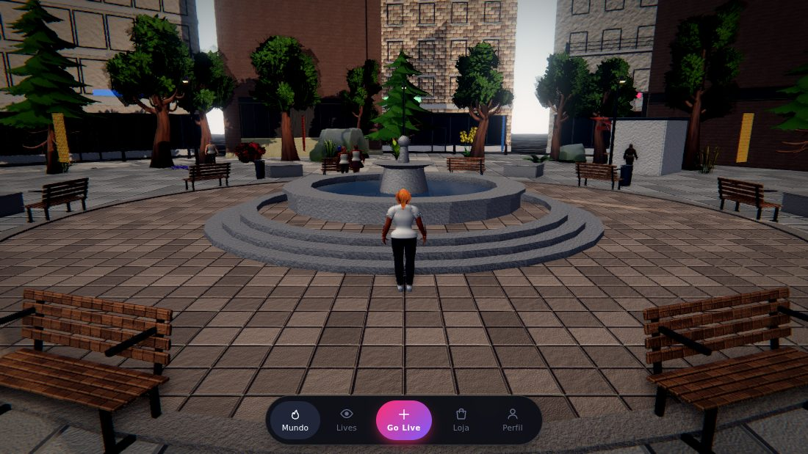
Asset Pass
Nove copas modeladas com peso de curadoria, cinco prédios de verdade no
anel, IBL medido no lugar do céu analítico, ladrilho de 4 m com relevo a
26% e a câmera 17% mais perto do personagem.
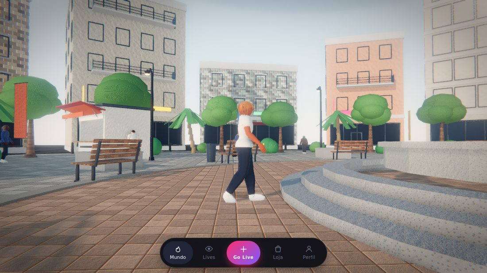
Procedural
O horizonte lava: fachada clara, céu claro, sombra rasa. Sem
profundidade, tudo cai no mesmo plano.
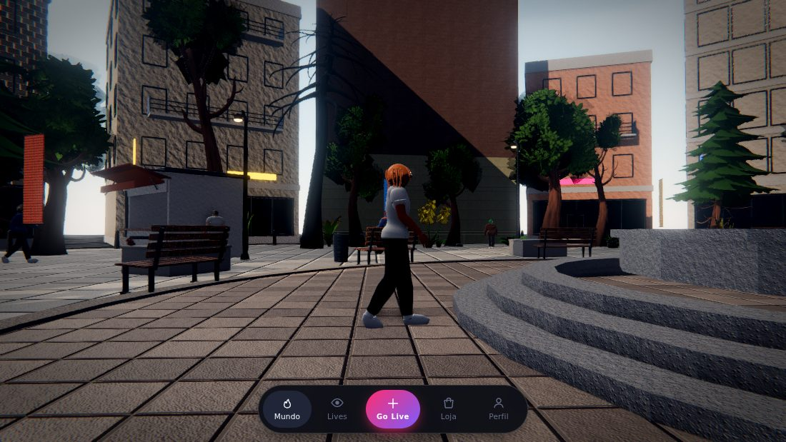
Asset Pass
Tijolo, cornija, vitrine e toldo dão escala ao quarteirão; a luz medida
separa o que está perto do que está longe.
Nenhum asset entra sem passar pelo passe. Escala em metros,
origem apoiada no chão e centrada, paleta puxada para a da família,
rugosidade trazida para a faixa do jogo, textura reduzida ao teto, um GLB
por família com cada variante como nó nomeado, e um colisor simplificado
no catálogo. É o que faz sete pacotes com sete escalas e sete paletas
pararem de parecer uma colagem.
Origem e licença viajam com o build. Vegetação e prédios são
Quaternius (CC0 na versão gratuita, declarado no .txt de cada pacote), o
HDRI é Poly Haven (CC0). O download NÃO fica no git — a QAL da Quaternius
e a licença padrão do Fab permitem incorporar num jogo e proíbem
redistribuir o asset solto, e um repositório público de .glb avulsos é
exatamente isso. O git guarda a lista, a curadoria, a licença e o passe;
npm run assets busca e reconstrói.
O que custa. 498 → 613 chamadas de desenho e 1,23 → 2,36 milhões
de triângulos no tier alto. No tier baixo a praça continua procedural, e
no médio entram só a vegetação: onde o governador de qualidade já cortou
figurante e sombra, a resposta certa não é uma praça bonita a 12 fps.
O que ainda não entrou. Animação de Mixamo para os figurantes —
é o próximo salto e é um projeto à parte: o esqueleto do Streampolis tem
vinte ossos e nenhuma junta de dedo, e retargetar sem isso é o trabalho,
não o download. Props pequenos (Kenney) e interiores (KayKit) ficam para
a segunda leva, pela mesma razão de coerência: uma cena de cada vez.
00cApartamento Asset Pass — a segunda cena
Mesmo método, cena diferente: KayKit Furniture Bits (CC0) para a
mobília, atravessando o mesmo passe. O layout, a colisão e o modo de
construção não sabem que ele existe — o que mudou foi uma tabela de
kind → modelo, e o que ela não cobre continua procedural.
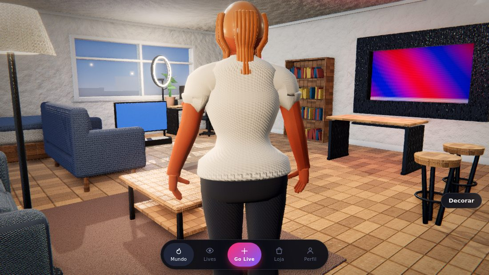
Procedural
Sofá de caixas, mesa de centro de tampo e pernas, e nada em cima de
nada: um quarto mobiliado, não um quarto habitado.
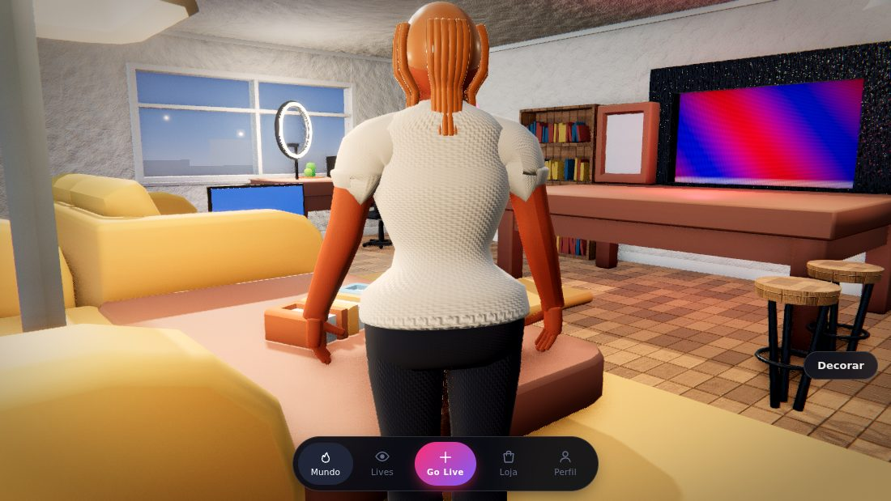
Asset Pass
Sofá com braço e almofada, tapete, aparador com moldura — e as
miudezas que ninguém modelaria à mão: livros largados na mesa de
centro, abajur na cabeceira, cacto no canto da mesa.
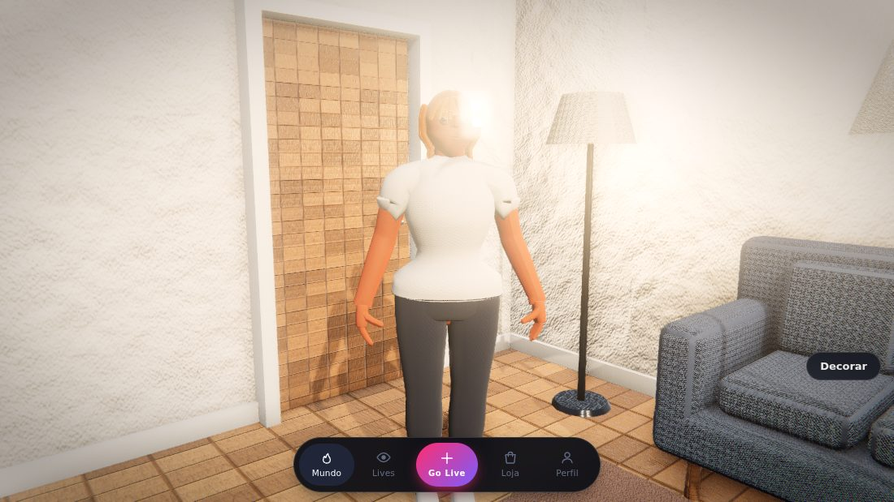
Procedural
A silhueta é a de uma caixa estofada.
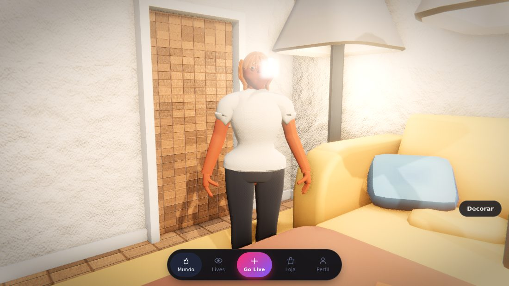
Asset Pass
Braço arredondado, assento fundo, almofada torta. É a forma que faz o
móvel, não a textura.
A divisão é identidade, não preguiça. Sofá, cama, mesa, tapete e
planta vêm do pacote: o jogador reconhece um sofá em qualquer estilo, e
um pacote bem desenhado faz isso melhor que um prop nosso. Já a ring
light, o microfone, o monitor, o LED da parede e a bancada continuam
autorais — é o que diferencia o quarto de um streamer do quarto de
qualquer um, e é o produto.
Um mapeamento errado é pior que nenhum. A estante alta ficou
procedural: o pacote gratuito não tem uma, e o aparador baixo esticado
para 1,90 m vira um móvel que não existe. A tabela é a única coisa que
decide, então tirar uma linha dela é todo o conserto.
Custa MENOS que o procedural. 346 → 260 chamadas de desenho e
205 → 182 mil triângulos. O KayKit inteiro compartilha um atlas, então
vinte e três móveis são um material — e um material é um draw call por
peça, não por parte.
O preço disso é a cor. Um atlas só significa que tingir o sofá
tingiria os vinte e três móveis junto, então a cor declarada por item em
PLACEABLES não se aplica aqui. A variedade volta pela
variedade do próprio pacote: fur_sofa_01 e
fur_sofa_02 viraram dois modelos diferentes, e os dois
tapetes, duas camas e duas poltronas seguem a mesma regra.
A câmera de dentro voltou atrás. Aproximar 17% resolveu a
composição da praça e estragou a do quarto, onde o personagem já é grande
e o que falta ver é a mobília que a pessoa comprou. Interior ganhou
enquadramento próprio — mais campo, mais recuo, dentro do que um braço de
câmera com colisão admite num quarto de 7×8 m.
01Personagem
Era aqui a maior distância. Quatro entregas depois — costura do corpo,
rosto, mãos e cabelo — o que sobra é corte de roupa: toda peça hoje é
o corpo inflado, e isso resolve a cintura sem dar caimento a nada.
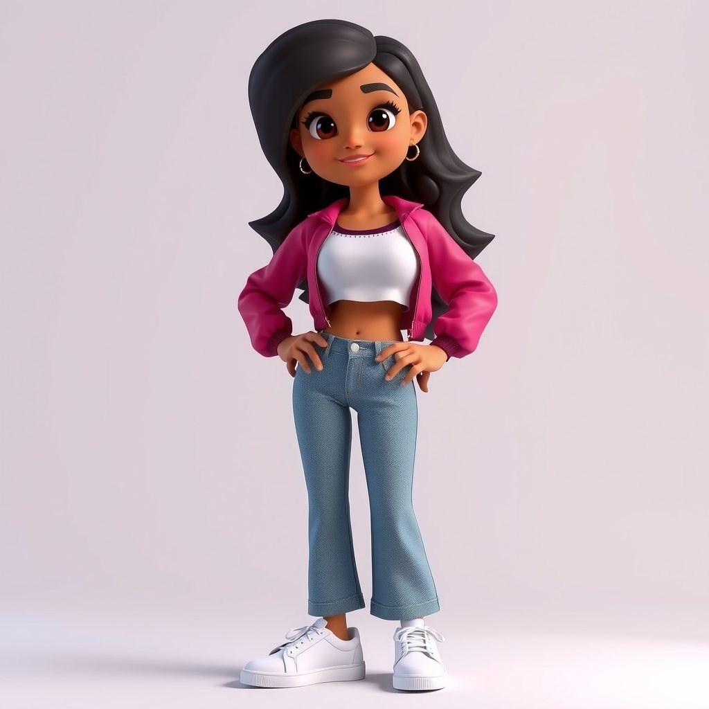
Alvo
Rosto legível a 60 px, mãos com dedos, cabelo esculpido em mechas,
silhueta fechada, roupa com corte e caimento.
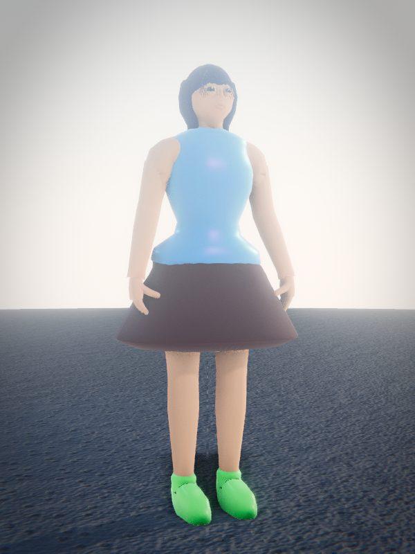
Hoje
O ombro deixou de ser uma emenda: a cadeia do braço
começa dentro do gradil e sobe sob o trapézio, então braço e tronco são
uma superfície só — e o portão mede isso agora. A mão foi girada um
quarto de volta, com a palma na coxa, e a pelve passou a ser o anel
mais largo abaixo do peito, o que fechou a cunha de pele nua que toda
roupa deixava em cada quadril. Falta corte: gola,
punho e barra.
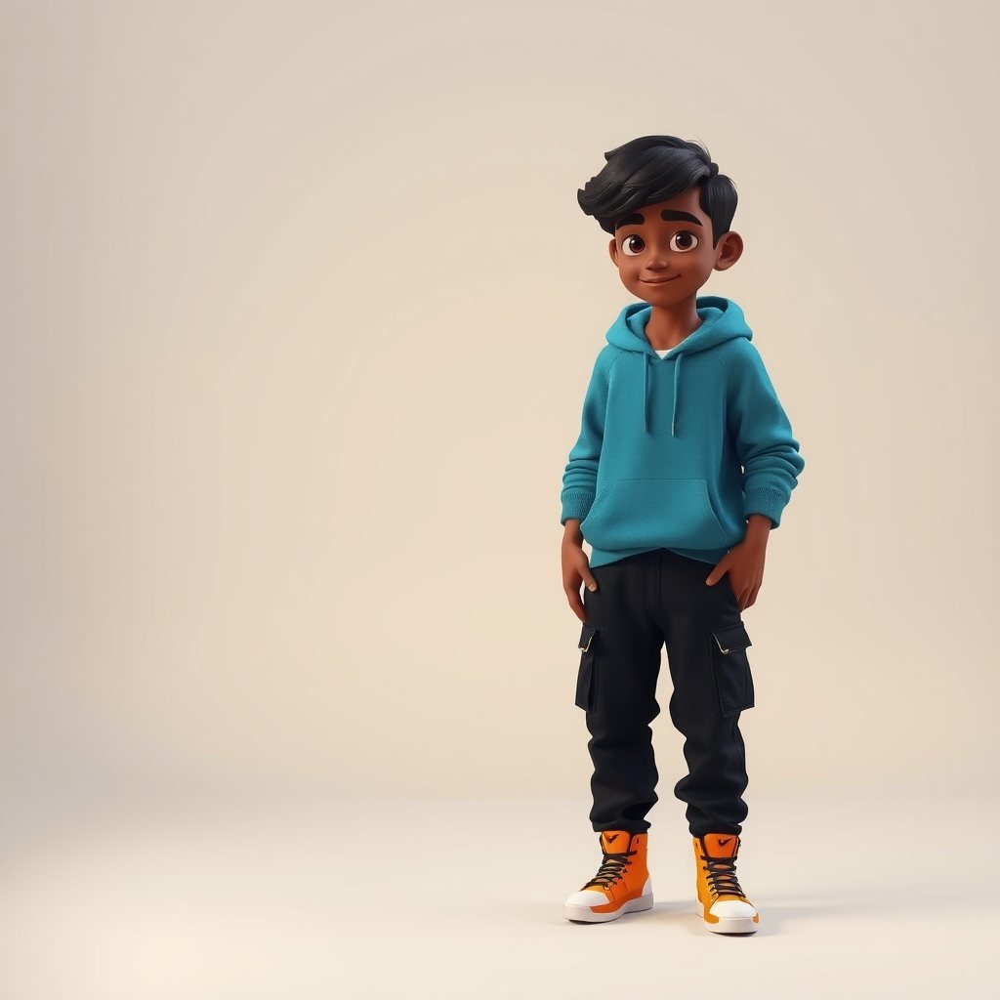
Alvo
Mesma família visual, ombro e mandíbula distintos, streetwear real.
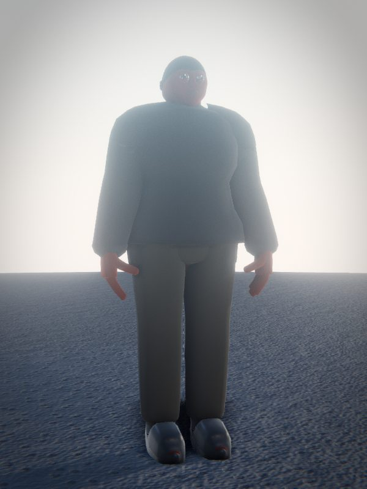
Hoje
Preset mais largo de ombro, e a mesma família de feições, mãos e cabelo
atendendo os dois. O guarda-roupa tem 45 peças — 10 blusas, 8 calças e
saias, 8 sapatos, 9 cabelos e 10 acessórios. Esta combinação (moletom e
cargo escuros contra céu claro) mostra o custo de não ter
caimento: sem gola nem punho, a peça escura vira um
bloco e come a silhueta que o preset acabou de dar.
02Rosto
Era o maior buraco: um avatar sem rosto não é um personagem, é um manequim.
Hoje a cabeça tem geometria de verdade — e é o que mais mudou a percepção
do produto inteiro, porque a live põe esse rosto no centro da tela.
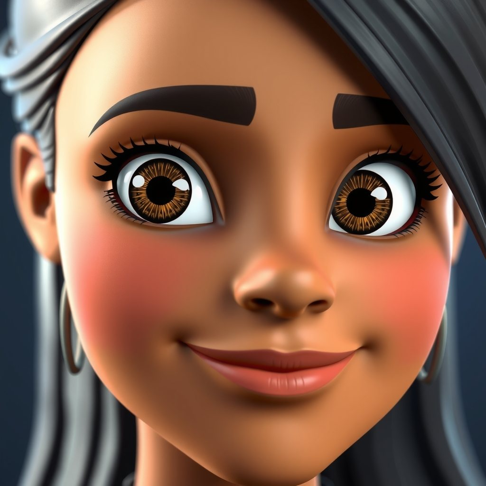
Alvo
Olhos com íris e cílios, sobrancelha, boca com volume, bochecha com
forma. Expressão neutra que já diz alguma coisa.
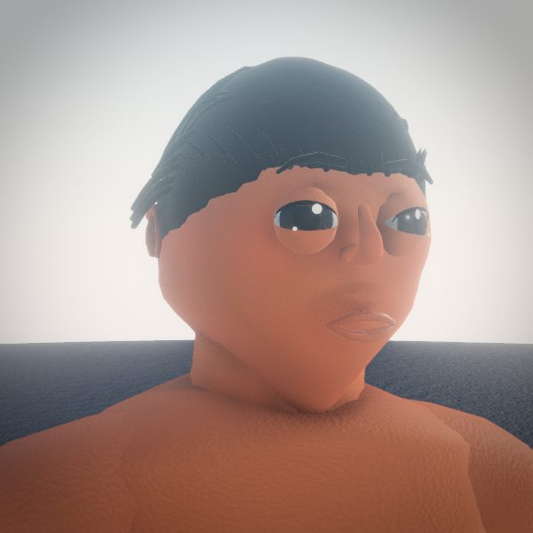
Hoje
A cabeça deixou de ser um ovo: a razão largura : profundidade : altura
saiu de 0,9 : 0,94 : 1 — uma bola — para 0,69 : 0,86 : 0,99, com
têmpora e mandíbula chatas, ângulo de mandíbula e occipital. A
pálpebra virou uma amêndoa que fecha nos cantos, em vez de uma calota
que deixava a esclera escapar pelas duas pontas. Quatro expressões
(neutro, sorriso, surpresa, foco), escolhidas pela própria ação:
dançar sorri, presente surpreende, perder um PK concentra.
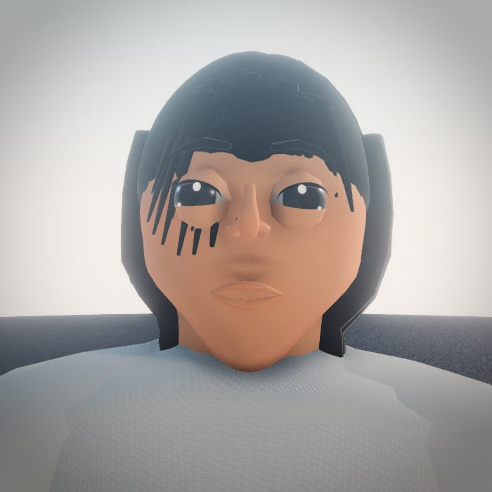
Hoje, em close
O olho foi de 0,132 para 0,150 raio de cabeça e ganhou íris grande,
pupila e DOIS brilhos — o da luz principal e o do rebote do chão, que é
o par que faz um olho parecer úmido. Sumiu o anel de esclera que
contornava a abertura: as pálpebras cobriam só até 1,50 rad de azimute e
o globo é uma esfera inteira, então sobrava um arco cinza em volta — a
leitura de olho colado no rosto. A boca existe no neutro (meia-largura
de 0,18 para 0,235, volume quase o dobro) e o nariz encurtou nas duas
pontas.
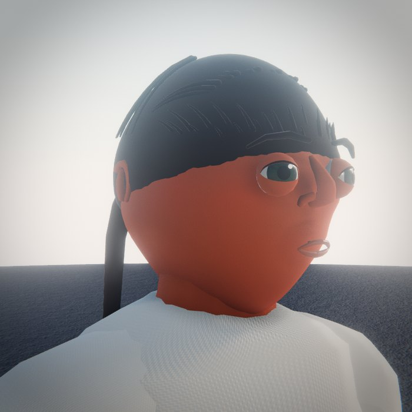
Três quartos
O crânio afinou (0,69 → 0,655 de largura), a testa ganhou um plano no
lugar da calota de esfera, o queixo projeta mais e AFINA — um queixo tão
largo quanto a mandíbula é uma pá — e o ângulo da mandíbula ficou
legível. A ponta da sobrancelha parou de sair da silhueta: de perfil ela
virava um gancho preto na frente da têmpora.
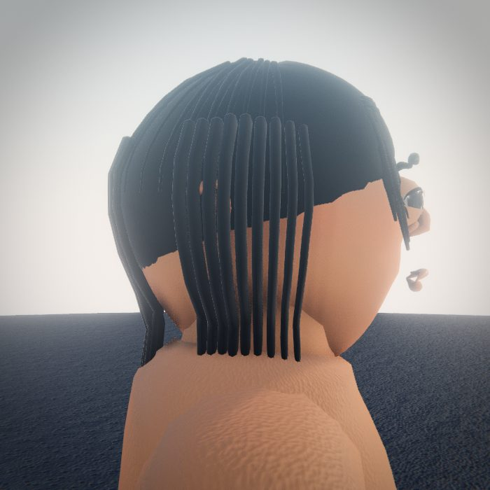
Perfil
A causa do “capacete” não era mecha nenhuma: era a LINHA DO CABELO. Nos
nove estilos o limiar frontal ficava entre 0,24 e 0,34, o que punha a
touca cobrindo a testa inteira, até a altura da sobrancelha. Subiu para
~0,40 e ganhou bico central, entradas nas têmporas e irregularidade —
uma linha que só depende da altura recorta um paralelo da esfera, ou
seja, uma reta atravessando a testa de orelha a orelha. E mecha virou
FITA: tubo de 6 mm lê como arame.
Cabelo não é volume, é em quantos fios o volume está dividido.
As mechas tinham 3 cm de diâmetro — três delas lado a lado leem como cabo
de fone. O volume é o mesmo; o que mudou foi a contagem, e com ela a
variação de comprimento e três camadas de afastamento do crânio, para que
cada ponta se recorte contra a de trás em vez de fundir numa casca.
Pele lisa de uma cor só é barro. O rosto agora carrega
zoneamento como COR POR VÉRTICE — função analítica da posição, não
textura: a cabeça é esférica em UV mas o nariz e a orelha entram na mesma
malha com UV de loft, e um mapa pintaria bochecha na ponta do nariz.
Os quadrados brancos no topo da cabeça eram a anisotropia. Ela
reamostra o mapa de ambiente com rugosidade esticada, o que traz de volta
um mip nítido e com ele o texel do sol. Nem rugosidade 0,68 nem ambiente
0,2 apagavam; desligá-la apagou. O brilho de fio ficou por conta do
sheen, que não reamostra nada.
Feições:nariz, boca, sobrancelha e orelha como geometria — feito. Nariz e orelha entram fundidos na cabeça: nenhum draw call a mais e nenhuma chance de descolar do crânio.
Olhos:íris com anel escuro e brilho pequeno; cílio como forma sólida — feito, tudo como calota sobre o globo.
Cabelo:mechas separadas com espessura — feito. Base, mechas, franja, laterais e volume traseiro, em nove estilos, tudo numa geometria só.
Mãos:cinco dedos — feito. Sem juntas de dedo: o rig não as tem e inventá-las obrigaria a retargetar todo clipe. O que se compra é silhueta.
Expressão:quatro poses faciais — feito, interpoladas a 12 Hz.
Crânio:uma cabeça, não um ovo — feito. Seções horizontais superelípticas: têmpora e mandíbula chatas, testa e occipital redondas. Era a razão largura×profundidade — perto de uma bola — que fazia o rosto ler como uma máscara pequena pintada num balão.
Ombro:o braço faz parte do corpo — feito, e medido: zero milímetro de vão entre tronco e braço nas 176 combinações.
Tecido:relevo próprio em toda peça — feito. Um relevo de trama compartilhado por todo o guarda-roupa; o mapa é só de normal, porque um mapa de cor brigaria com a cor que a loja vende.
Falta: corte de roupa — gola, punho, barra e caimento —, dedos articulados, e a nuca ainda é redonda demais em três quartos.
Os três defeitos de geometria viraram um portão. Calçados
fundidos, pele na cintura e pernas sem vão eram invisíveis num teste e
fáceis de perder a olho em cem combinações — então são medidos por raio
contra a superfície real, em 176 combinações, a cada mudança.
Folga mínima entre calçados 61 mm (mínimo 22),
vão entre as pernas 36 mm (mínimo 18) e
zero raios com pele fora da roupa e zero milímetro de vão no
ombro. Nenhuma roupa nova entra no
guarda-roupa com esse portão vermelho: uma peça herda o corpo de onde é
lofted, e cem peças sobre um corpo quebrado são cem peças quebradas.
03Praça Central
Composição e luz já estavam; cor e vida entraram.
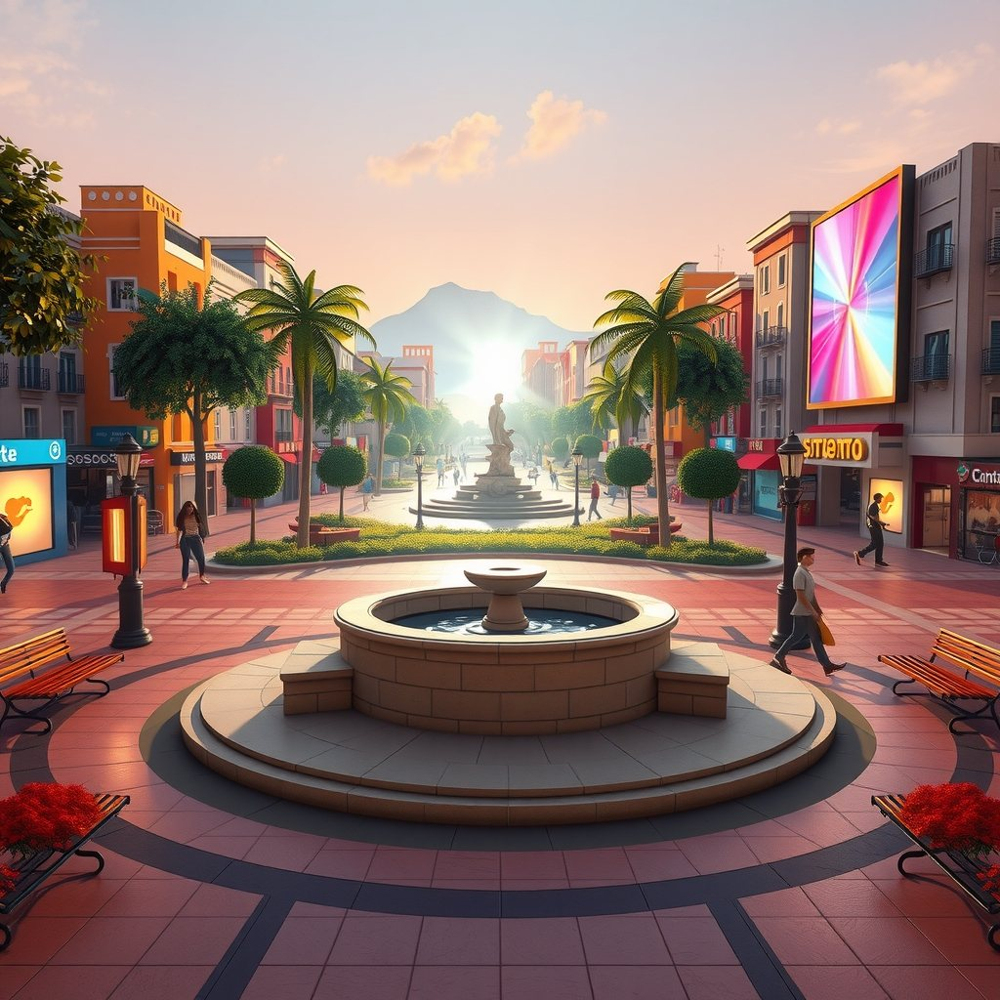
Alvo
Fachadas coloridas, vegetação variada, gente circulando, telão como
marco da praça, hora dourada com sombra longa.
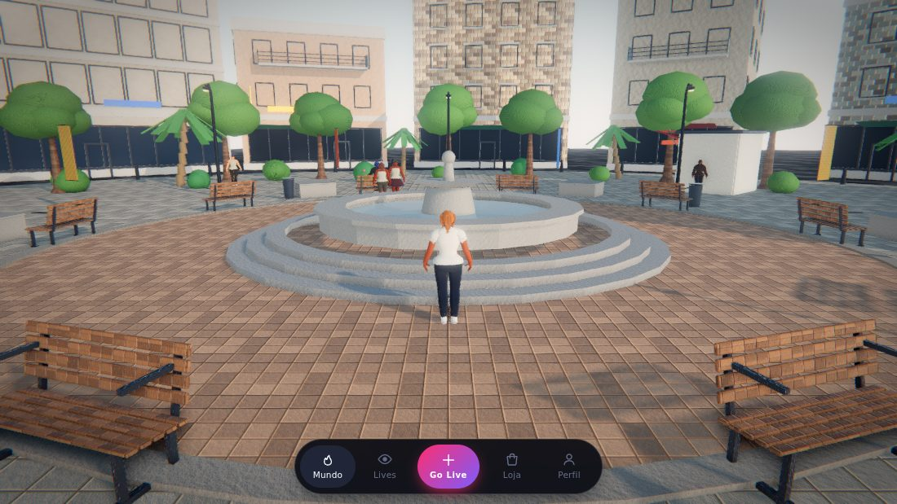
Perto do alvo
Calçamento em terracota, fachadas em família quente, palmeira entre as
copas, arbusto florido e toldo nos quiosques — e gente circulando:
figurantes que atravessam a praça, sentam no banco, olham o telão e
conversam em par.
Cor:a praça é cinza-pedra — feito, em família quente e ainda dessaturada. A saturação alta continua reservada ao interativo, e a única coisa saturada na vegetação são as flores.
Vida:NPCs decorativos — feito. Quantos cabem é decisão do governador de qualidade, não da cena: no tier baixo o certo é nenhum, não uma praça a 12 fps.
Vegetação:palmeira e arbusto florido — feito. Três copas redondas iguais eram uma skyline de pirulitos.
04Apartamento
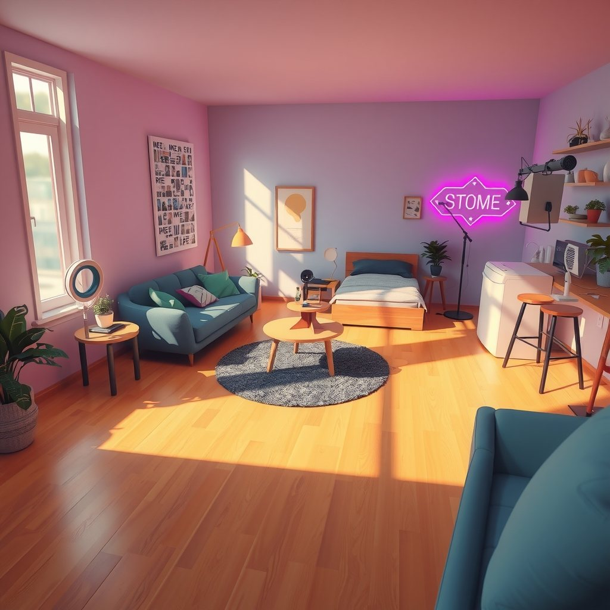
Alvo
Aconchego: têxtil, madeira, plantas, luz da janela cruzando o chão e o
canto de streaming como personagem do cômodo.
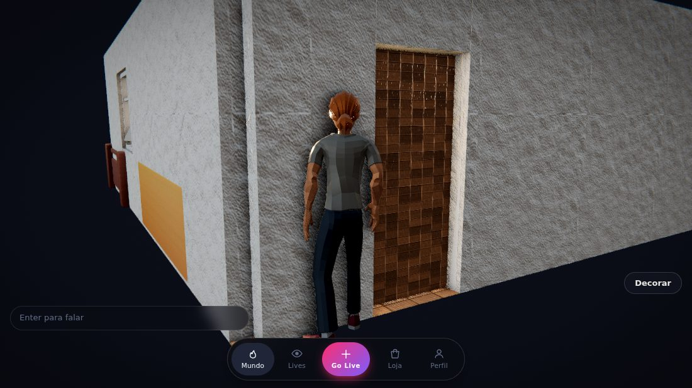
Hoje
26 peças colocáveis e um modo de construção: colocar, mover, girar,
guardar, em grade de 25 cm e giro de 90° — colocação livre fica pior,
móvel a 3,7° da parede lê como erro em todo print. Quem decide onde o
sofá cabe é a API, não o navegador. A captura mostra também um defeito
de enquadramento: num quarto pequeno a câmera fica colada nas
costas e o avatar come um terço do quadro. Falta aplicar piso e parede.
05Live Room
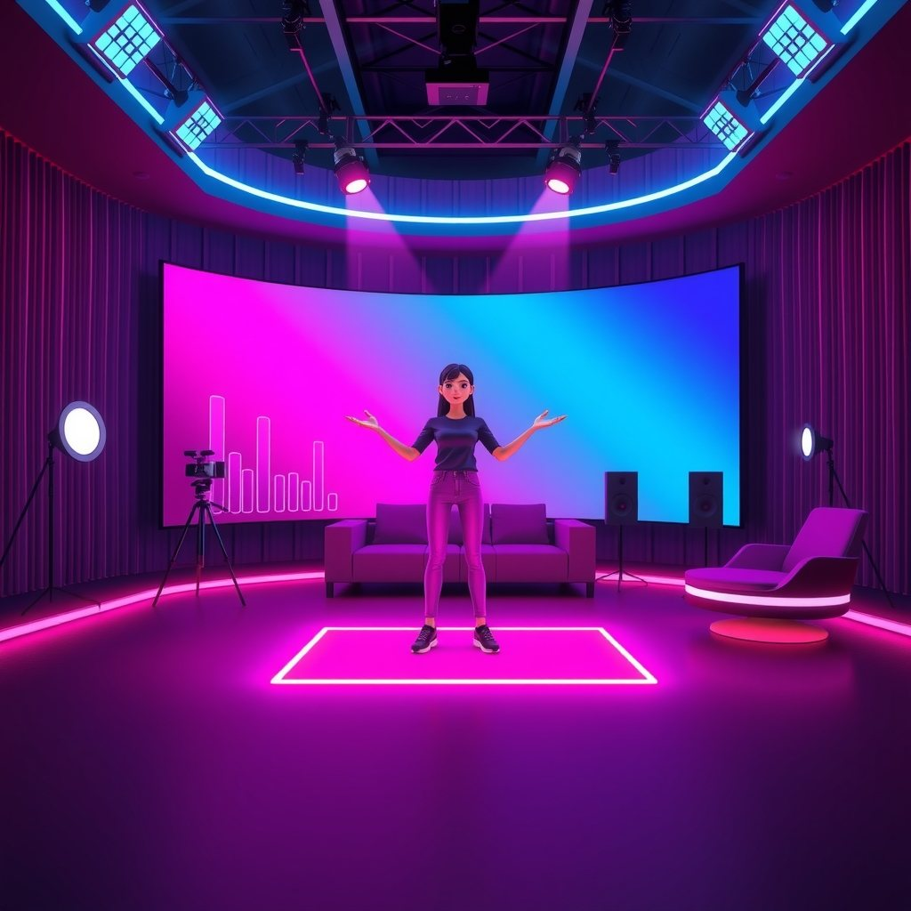
Alvo
Painel de LED como fonte de luz, feixes visíveis, separação clara entre
quem transmite e o fundo.
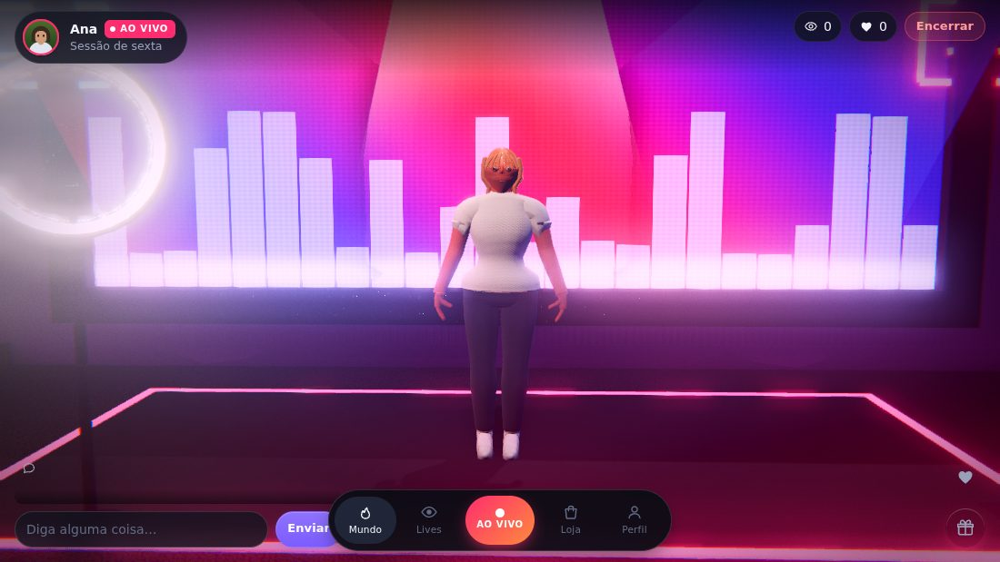
Perto do alvo
Painel, marca no chão, ring light, feixes e recorte já entregam a
cena. É a área mais próxima do destino.
06Interface
A interface não tem coluna “alvo” porque ela já chegou: vidro, informação
nas bordas, o 3D respirando no meio.
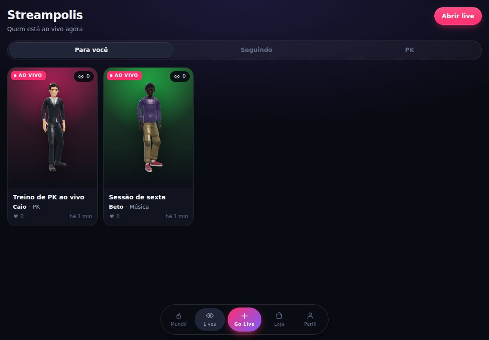
No alvo
Feed com capa renderizada pelo próprio jogo — a capa é o avatar do host,
não um vídeo.
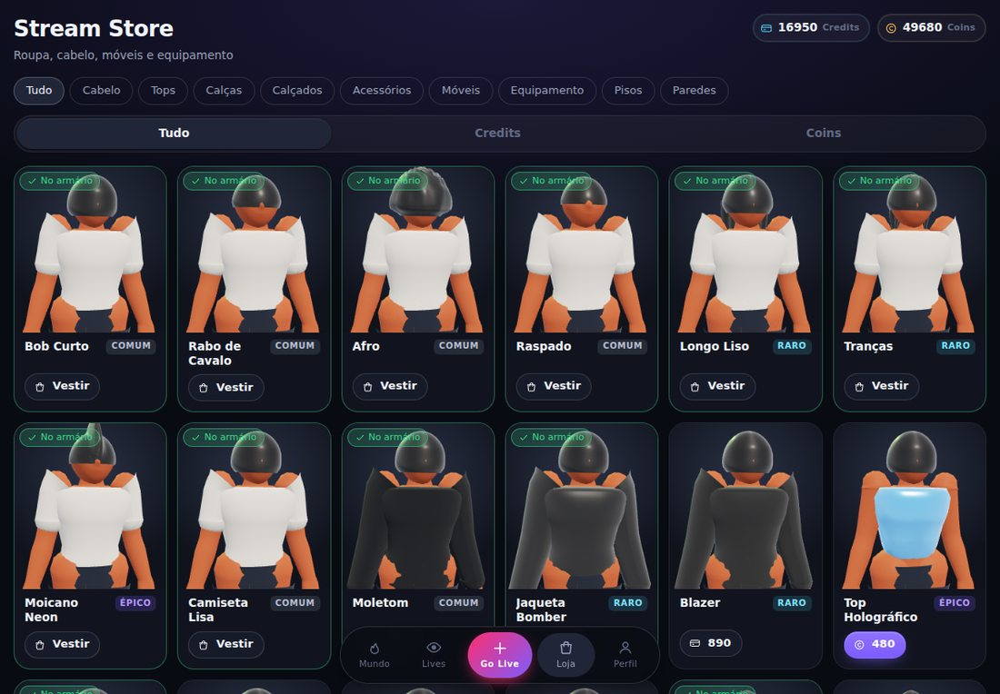
No alvo
Loja mostrando a peça vestida em quem está olhando — e cada tipo no seu
enquadramento: busto para blusa e cabelo, pernas para calça, pé para
sapato. Calça em busto era um card que não mostrava a peça.
07Regras da direção de arte
Proporção
Avatar de 1,67 m com cabeça ~7,5% maior que o real. Porta 2,1 m, assento 0,45 m, balcão 0,9 m. Escala errada quebra a leitura antes da textura.
Silhueta
Reduza a 60 px de altura: personagens diferentes precisam continuar distinguíveis. Cabelo e ombro fazem esse trabalho.
Material
Nada de cor chapada. Toda superfície tem rugosidade e relevo próprios: metal reflete, tecido absorve, pele espalha.
Luz
Chave direcional + preenchimento + recorte. Sombra de contato sempre — objeto sem sombra flutua.
Cor
Ambiente em paleta contida; a saturação alta é reservada para o que é interativo: LED, neon, presente, PK.
Exposição
Histograma sem estourar no branco nem empastar no preto. Cena de live é escura por escolha, não por engano.
Live #ff2d6f
Violeta #7c5cff
Ciano #4fd8ff
Coins #ffc247
Confirmação
Pedra da praça
Madeira
Superfície UI
08Ordem de ataque
Costura do corpo. Pés que não se fundem, cintura que fecha, vão entre as pernas. Feito, e defendido por um portão automático.
Rosto e mãos. Feições como geometria, cinco dedos, quatro expressões. Feito.
Cabelo em mechas. Feito: nove estilos sobre base, mechas, franja, laterais e volume traseiro.
Roupa com corte. Gola, punho, barra e caimento; o que faz uma jaqueta parecer jaqueta. É o único item da lista original ainda aberto — e agora aparece em 10 blusas em vez de 5.
Cor e vida na praça. Feito.
Catálogo de móveis. Feito, com o modo de construção junto.
Piso e parede. O catálogo já vende floor_* e wall_*, e nada os aplica.
Item de parede que gruda na parede. Quadro e fita LED hoje ficam onde você largar, na grade do chão.
Como ler as imagens do alvo. Elas são referência de intenção —
proporção, paleta, material, clima. Não são especificação de geometria e não
valem como promessa: qualquer texto que apareça nelas é ruído do gerador, e
a praça do alvo é mais realista do que queremos. O que se copia é a
leitura, não o render.